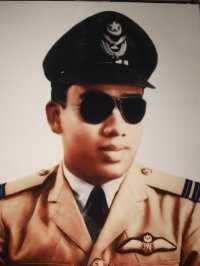
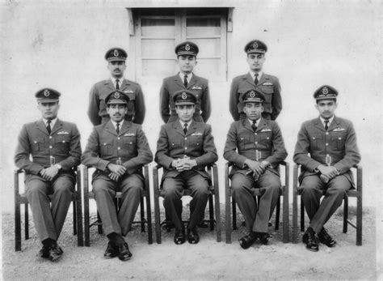

Flight Lieutenant Matiur Rahman was a brave pilot of the Pakistan Air Force who made the ultimate sacrifice for the independence of Bangladesh.
On August 20, 1971, he attempted a daring escape by hijacking a T-33 training aircraft to defect to India and join the Liberation War. Tragically, the plane crashed near Thakurgaon, and he embraced martyrdom.
For his supreme sacrifice and unwavering patriotism, he was posthumously awarded the 'Bir Sreshtho', the highest gallantry award of Bangladesh. His legacy remains a shining example of courage for all Air Wing cadets.

Historical photograph of early Air Force officers.
Key milestones in the evolution of BNCC from its inception to present day.
Today, the BNCC Air Wing remains a beacon of discipline and excellence, training thousands of young cadets to serve the nation in aviation and beyond.